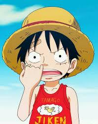

Theories on the past of One Piece
The One Piece world is rich with mysteries about its past, with several theories speculating on the origins of the world, the Void Century, and the One Piece treasure itself. One popular theory is that the Void Century, a mysterious period that the World Government tries to erase from history, holds the key to understanding the true nature of the world. Some believe that the ancient civilization that existed before the Void Century discovered a powerful truth, possibly related to the origins of the Devil Fruits and the true history of the world’s creation. Another theory suggests that the One Piece is not a physical treasure but rather the knowledge or realization of this lost history, a truth so profound that it could change the world.
Theories on the Future of One Piece
The future of One Piece is full of tantalizing theories, especially regarding the final stages of Luffy's journey and the fate of the world. One popular theory is that Luffy will eventually become the "Pirate King," but not in the conventional sense—he might unify the seas and overthrow the World Government, reshaping the global power structure. Some believe the final battle will involve Luffy and his crew facing off against the World Government’s forces, including the enigmatic Celestial Dragons, to bring about true freedom and equality for all. There's also speculation that the One Piece treasure, rather than being material wealth, will be a truth about the world—perhaps the secrets of the Void Century or the lost history that the World Government desperately wants to keep hidden.